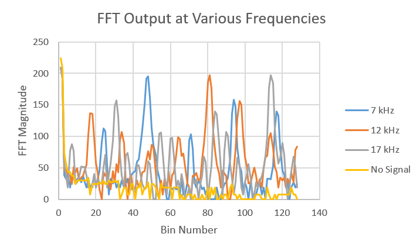

MILESTONE02
Objective
The purpose of this milestone was to spice up our robot with that sweet wall detection and differentiation between treasures.
Wall Detection
We used the short range IR sensor SHARP 0A41SK to detect the distance between the sensor and the wall.
The following video shows the code in action, as the sensor moves an increasing distance from the table until it is out of range:
The following code measures the distance between the sensor and an object:
int dis=0;
void loop() {
// Read sensor value for analog pin A0
float SensorValue = analogRead(A0);
// SensorValue to Distance conversion
float dis = 2076/(SensorValue - 11);
if (dis < 4 || dis >30) {
Serial.print( "Out of Range.\n");
}
else {
Serial.print(dis);
Serial.print(" cm\n");
}
delay(500);
}
To detect the wall, we can change the code to the following:
void loop() {
float SensorValue = analogRead(A0); // Read sensor value for analog pin A0
float dis = 2076/(SensorValue - 11); // SensorValue to Distance conversion
if (dis < 15 && dis > 13) {
// do turning
delay(1000);
}
delay(500);
}
Therefore, when the distance between the sensor on the robot and the wall falls into the 13 to 15 cm range, the robot will turn left or right accordingly to avoid the wall. The distance measurements will delay longer to finish the turning.
Treasure Detection
In order to differentiate between the three frequencies of treasures, we needed to modify our FFT code from Lab 2 for optical detection. As a unit test, we first checked to see which bins corresponded to the different treasure frequencies.
Since our analog circuitry was still in progress, we had to rely on just our software to differentiate between the frequencies for this milestone. We were then faced with the problem of how to make our software sensitive enough to detect the treasure farther away, but also able to differentiate between the three frequencies of treasure. This resulted from harmonics in the FFT - when a treasure of one frequency triggered the sensor, there would also be a spike in the relevant bins of other frequencies.
We solved this problem by comparing the relevant bins and determining which frequency had the highest magnitude. If the maximum magnitude was greater than the threshold, we reported that the treasure was detected.
This video shows detection of a single treasure, moving it in and out of range of our sensor:
It's hard to see in the video, but the printing of "7 kHz Treasure!" begins when the treasure is in range (close to the robot), and stops when the treasure is moved out of range.
Here is our code for determining which frequency treasure the sensor detected:
int max_7_bin = 0;
for (int i = 46; i < 50; i++) {
int x = (int) fft_log_out[i];
if (x > max_7_bin)
max_7_bin = x;
}
int max_12_bin = 0;
for (int i = 80; i < 83; i++) {
int x = (int) fft_log_out[i];
if(x > max_12_bin)
max_12_bin = x;
}
int max_17_bin = 0;
for (int i = 113; i < 116; i++) {
int x = (int) fft_log_out[i];
if (x > max_17_bin)
max_17_bin = x;
}
if (max_17_bin > max_12_bin &&
max_17_bin > max_7_bin) {
if (max_17_bin > threshold)
treasure_17++; //Detected 17kHz treasure
} else if (max_12_bin > max_7_bin) {
if (max_12_bin > threshold)
treasure_12++; //Detected 12kHz treasure
} else {
if (max_7_bin > threshold)
treasure_7++; //Detected 7kHz treasure
}
We found, however, that using this method sometimes resulted in false detection of treasure. Our software was extremely sensitive and could not filter out noise. The program also misidentified some of the frequencies. To solve both of these problems, we decided to add time integration.
We checked to see whether treasure of the same frequency had been detected for several iterations. Only when our robot had detected the treasure for more iterations than our cycle threshold did it report a treasure being detected. We found that adding the cycle threshold enabled our robot to filter out noise as well as correctly identify the frequency of treasure each time.
The following video shows our code recognizing the correct treasure frequencies:
Here is our code for time integration:
if (treasure_7 > time_threshold) {
// Report treasure detection
Serial.write("7 kHz treasure!\n");
treasure_7 = 0; // Reset relevant counter
}
else if (treasure_12 > time_threshold) {
Serial.write ("12 kHz treasure!\n");
treasure_12 = 0;
}
else if (treasure_17 > time_threshold) {
Serial.write ("17 kHz treasure!\n");
treasure_17 = 0;
}
Note: We did not reset the counters if the treasure of a particular frequency was not detected that iteration. We chose not to do this to keep the number of instructions low. We thought this was an acceptable trade off as our code worked correctly even without this reset
Note 2: It was hard to get computer screen focused and the robot and treasures in frame, so the video pans between our robot-treasure setup and the screen. We first show that our code can detect different frequencies, then we show ourselves switching the treasures.
Looking Ahead
For our final robot, we plan to modify our treasure detection based on our final analog circuitry. We plan to add an op-amp as well as band pass filtering in order to amplify the output of the sensor and filter out noise. As a result, we will not have to make our software as sensitive, and we will be able to make it much more efficient.